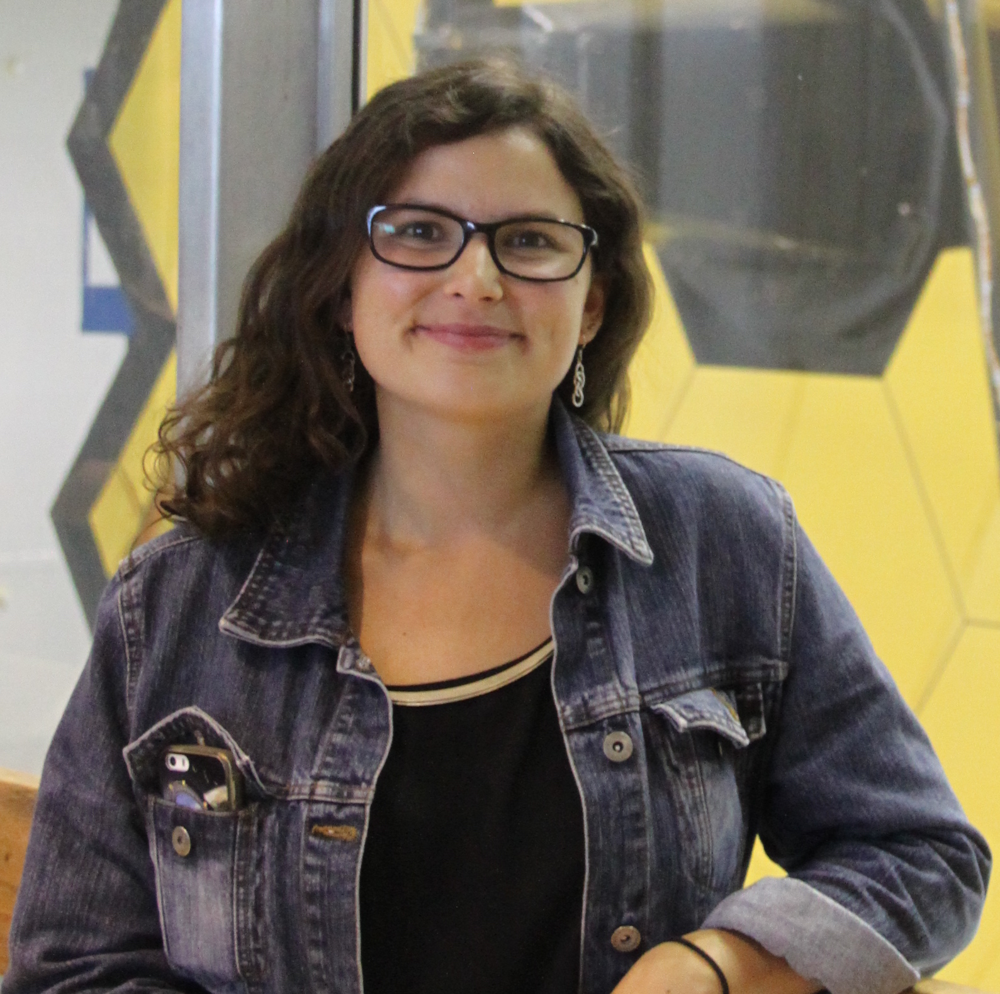

Dr Hannah R. Wakeford

Title: Lecturer in Astrophysics
Institution: University of Bristol
Department: School of Physics
Email: hannah.wakeford at bristol.ac.uk
Research Interests: exoplanet clouds; giant exoplanets; spectroscopy; observations
Hannah is a lecturer in astrophysics at the University of Bristol in the UK. Her work focuses on characterizing the atmospheres of exoplanets through observations with the Hubble Space Telescope, and working towards a better understanding of how exoplanets can be explored further with Webb. Hannah has also developed theoretical models for exotic clouds in exoplanet atmosphere and uses them to interpret observations and make prediction for future studies.